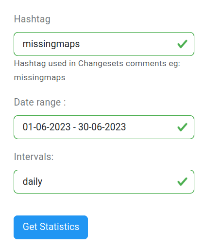

<div class="mX-5 p-10 bgc-white bd">
    <div class="container">
        <h1>Need some help?</h1>

        <p>
            These step-by-step instructions guide you through the <strong>ohsomeNow Stats</strong> and provide useful
            recommendations. Reach out to us via <a href="mailto:ohsome@heigit.org">ohsome@heigit.org</a> in case you
            need
            further assistance.
        </p>

        <h2>How to define your query?</h2>

        <ol>
            <li>Enter your OpenStreetMap <strong>hashtag</strong> in the first field. In the example we have used
                <span class="icquote">missingmaps</span> (without leading&nbsp;<strong>#</strong>).
            </li>
            <li>
                Pick a pre-defined or custom <strong>time range</strong>. In the example we have selected the
                <span class="icquote">last 30 days</span>. All timestamps displayed on the website are in UTC.
            </li>
            <li>
                Pick a <strong>time interval</strong> to define the temporal granularity of the statistics. In the
                example
                we
                have selected a <span class="icquote">daily</span> interval.
            </li>
            <li>
                Finally, click the <strong>Get Statistics</strong> button. Your query is now processed by our server.
                The
                results will be displayed shortly after in the dashboard. For some hashtags and very long time ranges it
                might take up to 5 seconds until results are displayed.
            </li>
        </ol>

        <figure>
            
            <figcaption>Query form with example parameters</figcaption>
        </figure>

        <div class="pL-10 bdL bdc-yellow-800 bdwL-5">NOTE: When you click on a trending hashtag this hashtag will be
            directly considered in your query. The statistics will be updated immediately.
        </div>
    </div>
</div>
